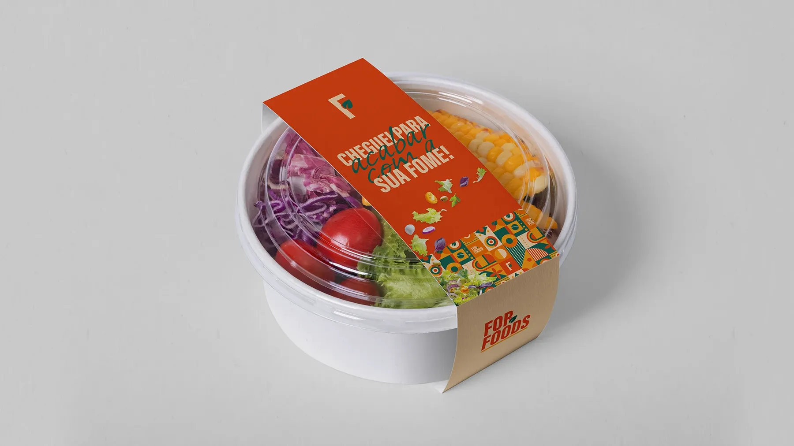
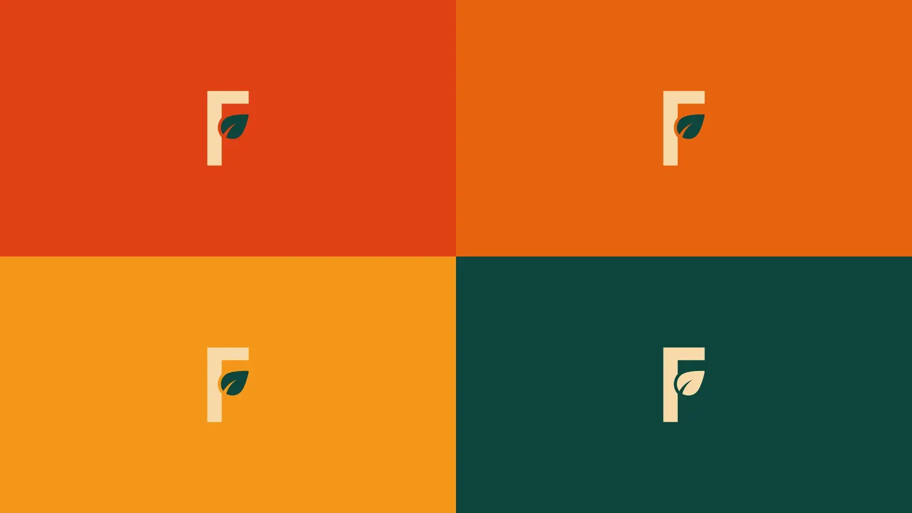
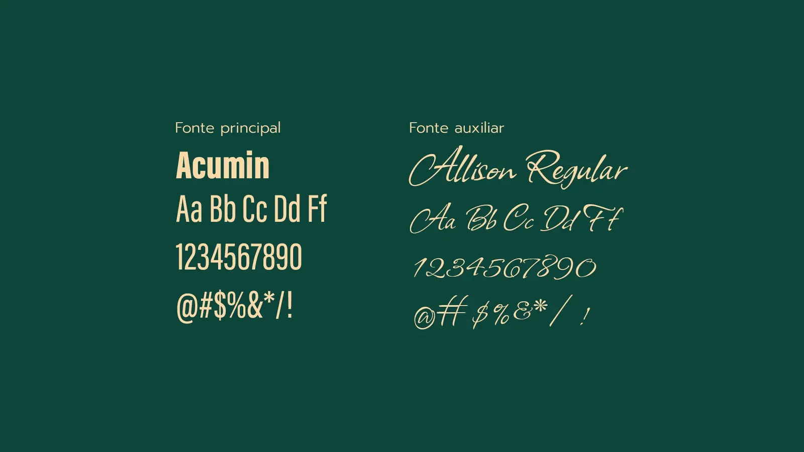
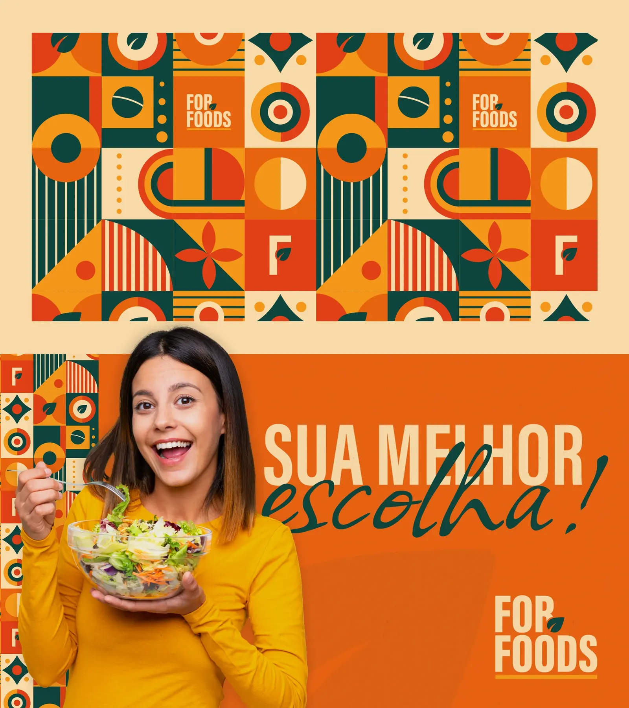
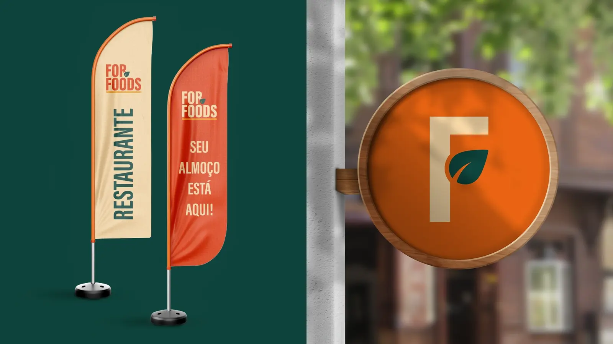
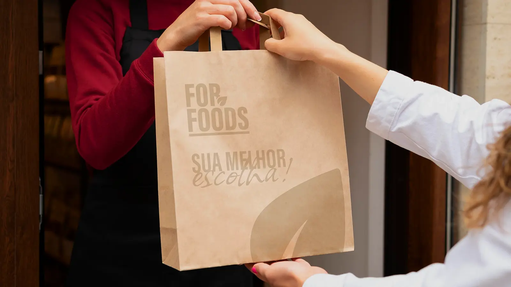
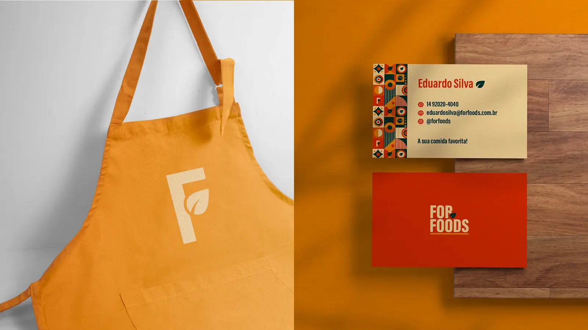

Alimentação
For Foods

A For Foods precisa ser reconhecida na gôndola e na tela com a mesma força. A identidade organiza nome, cor e aplicações de embalagem para uma marca que fala de comida com apetite e método.
O sistema cobre capa, peças de produto e presença digital, com um ritmo visual feito para acompanhar o dia a dia de quem vende e de quem escolhe o que vai à mesa.








